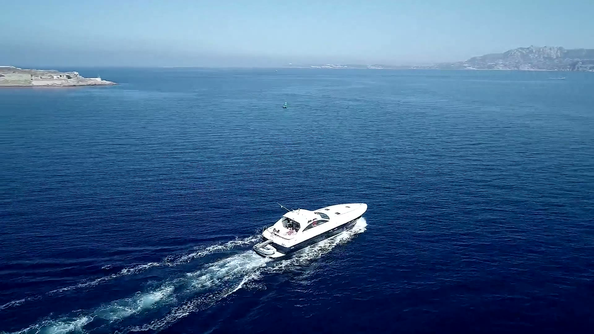
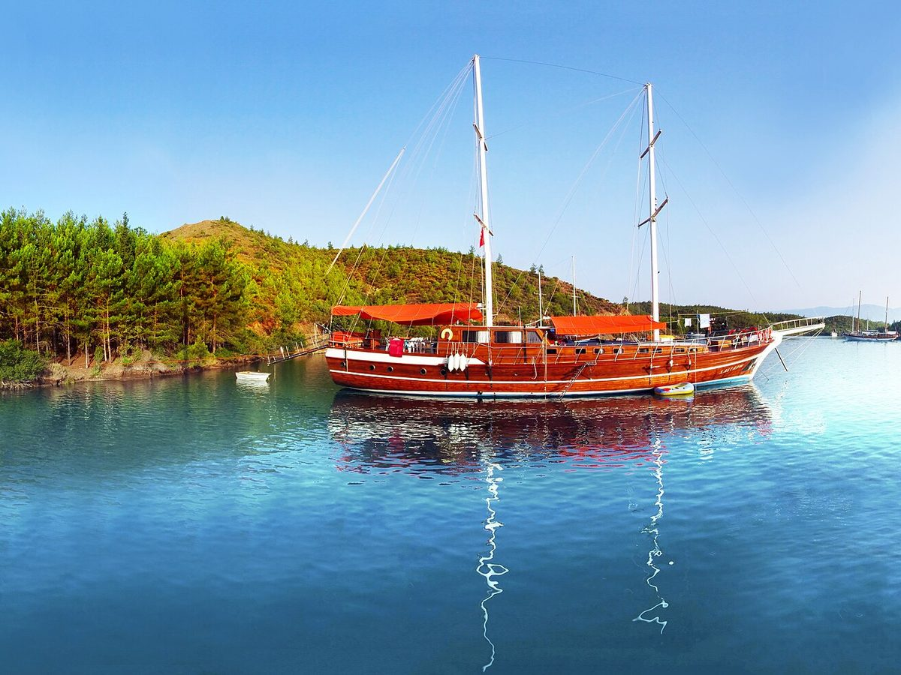
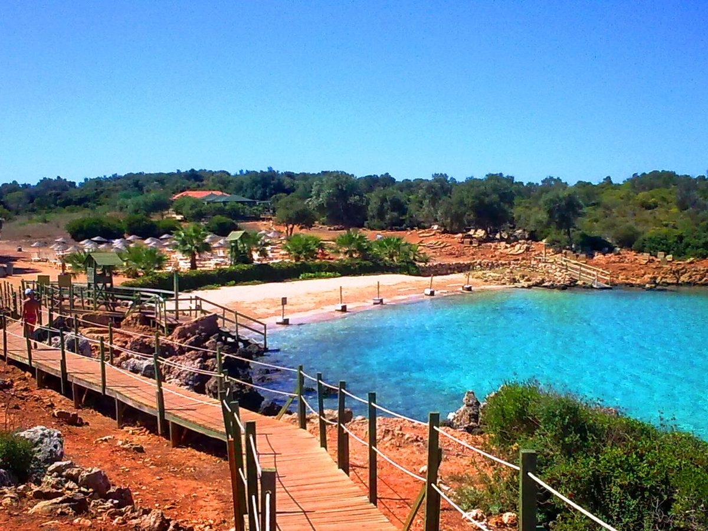

Gulets, motor yachts, catamarans and speedboats with a captain, by the hour, for a full day or overnight. Choose your yacht and date; we open the boats that are free on your day.
Tap a type to see the Bodrum yachts of that kind, then pick your date. Prices are the lowest summer rates across Türkiye’s main harbours.



Karaada sits just off Bodrum harbour. Swim into its warm-spring cave for the famous orange mud, then cool off in the clear water of Aquarium Bay and Camel Beach on the way back.
Speedboat · motor yachtOrak’s shallow, turquoise water has earned it the nickname “Bodrum’s Maldives”. Lunch on board, swim stops in quiet coves, and back in the harbour for sunset.
Gulet · catamaranThe Blue Cruise. Sleep at anchor and wake up in Çökertme, the Seven Islands, English Harbour and Cleopatra’s Sedir Island, whose fine sand is protected.
Gulet · sailboat · overnightTwo ways to charter in Bodrum, both bookable on ViraCheck.
What guests ask most before booking. Anything else? Write to us.
In summer, hourly charters across Türkiye’s main harbours start from about ₺1,721 per hour for gulets and sailboats, ₺1,999 for motor yachts, ₺2,499 for speedboats and ₺5,941 for catamarans. Prices change with the season, the date and the size of the yacht; you see the exact price for your date before you book.
Most Bodrum yachts are offered with a captain, and many gulets and motor yachts come with a full crew. Each listing states exactly what is included, such as captain, crew, fuel and meals.
Not if you charter with a captain. To sail a yacht yourself (bareboat), you need a recognised sailing licence; the listing tells you what is required.
The season runs from May to October. June and September are warm and calmer; in July and August the northerly meltem wind often freshens in the afternoon, so many charters head out in the morning or stay in sheltered coves.
Cancellation terms are shown on every listing and follow the partner’s policy. Read them before you book.
ViraCheck does not charter yachts or operate tours; we help you find the right yacht and tour. Prices, availability, payment and cancellation are handled by the partner, and the partner may pay us a commission at no extra cost to you. Starting prices are the lowest hourly summer-season prices listed by Viravira across 12 main harbours in Türkiye (November 2026) and vary by season and date. Photos are illustrative; see photo credits.
